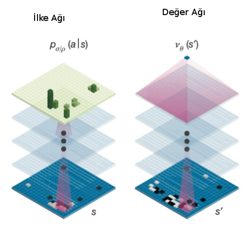
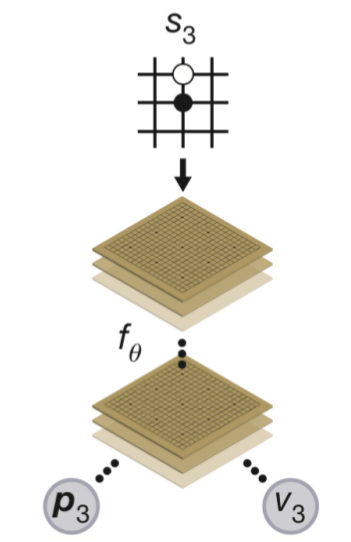
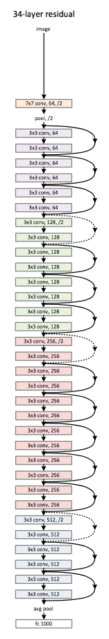

Derin Öğrenme ile Go Oyununu Oynamak, DeepMind AlphaGo Zero
Yapay Zeka alanındaki heyecan verici ilerlemelerden biri Google DeepMind şirketinin AlphaGo programının 17 kez Go şampiyonu olmuş Lee Sedol'u yenmesiydi. Fakat DeepMind orada durmadı, mimariyi geliştirerek AlphaGo'yu 100-0 yenecek AlphaGo Zero'yu geliştirdi! Yeni mimarinin ilginç tarafı YZ'nin hiç dış veriye ihtiyaç duymadan eğitilmiş olması. AGZ sıfır kabiliyet ile başlıyor (clean slate), ve kendisiyle oynaya oynaya Go şampiyonlarını yenecek hale geliyor. Bu ve ek ilerlemeleri bu yazıda paylaşıyoruz.
Mimari
Genel olarak AG ve AGZ'nin benzer bazı özellikleri var. Bunlardan ilki Monte Carlo Ağaç Aramasının (Monte Carlo Tree Search -MCTS-) bir derin YSA ile genişletilerek kabiliyetinin ilerletilmiş olması. MCTS konusunu işledik, herhangi bir tahta pozisyonundan başlayarak simülasyon yapılır, ve kazanç / kayıp verisi yukarı alınarak karar mekanizması için kullanılır. Fakat simülasyon yapılırken ve her tahta pozisyonundan hamle seçenekleri üretilirken ne kadar derine inilecek? Oyun bitene kadar inilirse bu özellikle Go gibi bir oyunda çok derin ve geniş bir ağaç ortaya çıkartabilir, bilgisayarlar performans açısından böyle bir ağaçla zorlanırlar. Çözüm belli bir tahtaya bakarak o oyunun kazanılıp kazanılmayacağı hakkında "sezgisel'' bir karar verebilmek. Bu işi örüntü tanıma üzerinden YSA çok güzel yapabilir. Önceden (kendisiyle oynarken) elde edilen oyun verisine bakarak, tahta pozisyonları ve o oyunun kazanılıp kazanılmadığı verisiyle eğitilen "değer YSA'sı'' artık yeni bir tahtayı görünce o durumun kazanç şansının olup olmadığını -1,+1 arasında bir değer ile hesaplayabilir. Bu durumda MCTS'in herhangi bir dalda oyunu sonuna kadar simüle etmesine gerek yoktur, belli bir seviye sonra durup YSA'ya kazanç şansını sorar, bu değeri kullanır.
İkinci özellik bir ilke / siyaset / strateji YSA'sı kullanmak, ilke YSA'sı bir tahtayı girdi olarak alıp, yapılabilecek tüm hamleler için bir kazanç olasılığı üretebilir, ilke YSA'sin çıktısı potansiyel olarak tüm tahta hücreleri olabilir [1,3]. MCTS bu çıktıları kazanma olasılığı daha yüksek olan hamle ağaç dallarını simüle etmek için kullanacaktır.
Yazının geri kalanında 9x9 Go boyutlarını referans alacağız, AG ve AGZ 19x19 oyunu üzerinde işliyor.

Bir not düşelim, YSA "bir tahtayı girdi alıyor'' dedik ama girdi verisi oldukca zenginleştirilmiş halde, sadece (9,9) boyutunda tek bir tahta değil, (9,9,17) boyutunda yani 17 katmanlı bir veri "balyası''. Bu balyayı hazırlamak için herhangi bir oyun anında tahtaya bakılır, her renk için (siyah/beyaz) 8 katman yaratılır, bu katmanlardan biri o rengin o andaki tahtadaki pozisyonu, diğer 7'si hemen önceki 7 adımdaki aynı rengin pozisyonları, aynı şekilde diğer renk için 8 katman, ve ek bir katman sıranın kimde olduğu. Tüm bunlar istiflenerek toplam 17 katman yaratılır. Herhangi bir anda oyunun durumu bu tensor üzerinden belirtilir. Verinin bu şekilde zenginleştirilmesinin sebebi herhalde zamansal bağlantıları yakalamaya uğraşmak.

AlphaGo Zero
AGZ'nin yaptığı ilerlemeler ise şunlar [3]: AlphaGo değer ve ilke için iki ayrı ağ kullanıyordu. AGZ'de değer ve ilke YZ'leri birleştirilerek tek bir YSA ile iki çıktı üretilmesi sağlanıyor, bu yapıya esprili bir şekilde "iki başlı canavar (two-headed monster)'' ismi de veriliyor. Bu mimari biraz garip gelebilir, çünkü çoğu uygulamada genellikle tek bir çıktı kullanılır, mesela bir resimde kedi olup olmadığını tahmin edecek bir YZ tek bir ikisel çıktı ile bunu yapabilir, ya da resmin belli kategorilere ait olup olmadığı tek bir vektör çıktısı ile, bu vektörde obje olasılıkları vardır. Fakat biraz düşününce iki farklı çıktılı yapının niye işlediğini anlayabiliriz, sonuçta YZ bir fonksiyonu yaklaşık olarak temsil etmeye çabalar, eğitim sırasında kafa #1 fonksiyonu bir tahmin üretir, ve eğitim o kafanın yaptığı tahmine sonuç veren parametreleri günceller, aynı şekilde kafa #2 için düzeltme yapılır.

İkinci bir AGZ ilerlemesi artıksal ağ (residual network) adı verilen bir derin YSA yapısı kullanmak. Artıksal ağlar pür evrişimsel ağların daha gelişmiş hali, bu yapılarda evrişimsel ağda bölge atlaması yapılarak sonraki bölgelere direk / kısayol bağlantıları koyuluyor [6]. Örnek bir yapı altta,

Üçüncü ilerleme ise AGZ'nin kendisine karşı oynayarak kendini eğitmesi (AG için başkaların oynadığı oyunların kayıtları kullanıldı). DeepMind bilimcileri araştırmaları sırasında şunu anladılar: hangi baz mimariyle başlarsak başlayalım, MCTS onu daha iyileştirir. Bu durumda herhangi bir YZ alınır ki başta ağırlık değerleri rasgele yani hiç bir doğru karar vermez, ama bu YZ, MCTS ile daha iyi performans gösterecektir, bu sırada oyundan eğitim verisi toplanır ve bu veri YZ'yi iyileştirmek için ağa uygulanır, ve işlem başa dönerek devam edilir. Bu sayede en kötü performanstan en iyisine doğru ilerlemek mümkündür.
Eğitim verisinde hedefin ne olduğunu daha iyi vurgulamak gerekirse, değer kafası için bu tek bir değer, ilke kafası için tüm 9x9 tahta pozisyonlarında hangi hamlenin yapılmış olduğu, o hücre 1 diğerleri 0 değerinde olacak. Bu şekilde eğitilen YSA, ilke tahmini üreteceği zaman tüm hücrelerde olasılık değerleri üretecektir.
Alttaki kod [4]'u baz almıştır. Eğitmek için train.py kullanılır,
eğitim sırasında en son YSA belli aralıklarla sürekli kaydedilecektir,
eğitim sonunda ya da yeterince eğitilince işlem durulabilir, ve
gnugo_play.py kaydedilen aynı modeli kullanarak GnuGo [1] programına
karşı oynatılabilir. YSA olarak biz ResNet yerine daha basit bir yapı
kullandık,
import simplenet
simplenet.PolicyValue.create_network()
Tensor("input_1:0", shape=(?, 17, 9, 9), dtype=float32)
Tensor("conv2d/BiasAdd:0", shape=(?, 17, 9, 64), dtype=float32)
Tensor("batch_normalization/batchnorm/add_1:0", shape=(?, 17, 9, 64), dtype=float32)
Tensor("conv2d_2/BiasAdd:0", shape=(?, 17, 9, 128), dtype=float32)
Tensor("batch_normalization_2/batchnorm/add_1:0", shape=(?, 17, 9, 128), dtype=float32)
------------- value -------------------
Tensor("conv2d_3/BiasAdd:0", shape=(?, 17, 9, 2), dtype=float32)
Tensor("activation_3/Relu:0", shape=(?, 17, 9, 2), dtype=float32)
Tensor("flatten/Reshape:0", shape=(?, 306), dtype=float32)
policy_output Tensor("activation_4/Softmax:0", shape=(?, 82), dtype=float32)
------------- policy -------------------
Tensor("conv2d_4/BiasAdd:0", shape=(?, 17, 9, 1), dtype=float32)
Tensor("activation_5/Relu:0", shape=(?, 17, 9, 1), dtype=float32)
Tensor("flatten_2/Reshape:0", shape=(?, 153), dtype=float32)
Tensor("dense_2/BiasAdd:0", shape=(?, 256), dtype=float32)
Tensor("activation_6/Relu:0", shape=(?, 256), dtype=float32)
Tensor("dense_3/BiasAdd:0", shape=(?, 1), dtype=float32)
Tensor("dense_3/BiasAdd:0", shape=(?, 1), dtype=float32)
Out[1]: <tensorflow.python.keras._impl.keras.engine.training.Model at 0x7fa2dd30de50>
import numpy as np, resource, sys
from operator import itemgetter
sys.setrecursionlimit(1500)
resource.setrlimit(resource.RLIMIT_STACK, [0x10000000, resource.RLIM_INFINITY])
sys.setrecursionlimit(0x100000)
class TreeNode(object):
"""MCTS agacindaki bir dugum. Her dugum kendi Q degerini, onceki
olasiligi P'yi, ve kac kez ziyaret edildigi sayisiyla duzeltilmis
onsel skoru u'yu biliyor.
"""
def __init__(self, parent, prior_p):
self._parent = parent
self._children = {}
self._n_visits = 0
self._W = 0
self._Q = 0
self._u = prior_p
self._P = prior_p
def printing(self):
print(self._children)
for _, child in self._children.iteritems():
child.printing()
def expand(self, action_priors):
for action, prob in action_priors:
if action not in self._children:
self._children[action] = TreeNode(self, prob)
def select(self):
"""Cocuklar arasinda maksimum aksiyon Q + u(P)'yi vereni sec
"""
return max(self._children.iteritems(),
key=lambda act_node: act_node[1].get_value())
def update(self, leaf_value, c_puct):
"""Dugumu altindaki cocuklardan gelen irdeleme uzerinden guncelle
Arguments:
leaf_value -- mevcut oyuncu perspektifinden alt agacin degeri
c_puct -- (0, inf) arasinda bir sayi, bu dugumun skoru
uzerinde Q ve P'nun etkisini izafi olarak ayarlar
Returns:
None
"""
self._n_visits += 1
self._W += leaf_value
self._Q = self._W / self._n_visits
if not self.is_root():
self._u = c_puct * self._P * np.sqrt(self._parent._n_visits) / (1 + self._n_visits)
def update_recursive(self, leaf_value, c_puct):
if self._parent:
self._parent.update_recursive(leaf_value, c_puct)
self.update(leaf_value, c_puct)
def get_value(self):
return self._Q + self._u
def is_leaf(self):
return self._children == {}
def is_root(self):
return self._parent is None
class MCTS(object):
def __init__(self, value_fn, policy_fn, c_puct=5, n_playout=1600):
self._root = TreeNode(None, 1.0)
self._value = value_fn
self._policy = policy_fn
self._c_puct = c_puct
self._n_playout = n_playout
def _playout(self, state, self_play):
node = self._root
if not node.is_leaf() and self_play:
tmp = [0.03 for _ in range(len(node._children.items()))]
etas = np.random.dirichlet(tmp,1)[0]
j = 0
for action, child_node in node._children.iteritems():
child_node._P = 0.75*child_node._P + 0.25*etas[j]
j += 1
while True:
if node.is_leaf():
action_probs = self._policy(state)
# Check for end of game.
if len(action_probs) == 0:
break
if node.is_root() and self_play:
tmp = [0.03 for _ in range(len(action_probs))]
etas = np.random.dirichlet(tmp,1)[0]
j = 0
new_action_probs = []
for action, prob in action_probs:
prob = 0.75*prob + 0.25*etas[j]
new_action_probs.append((action, prob))
j += 1
action_probs = new_action_probs
node.expand(action_probs)
break
# Greedily select next move.
action, node = node.select()
state.do_move(action)
# Alt dugumunun degerini YSA'yi kullanarak hesapla
leaf_value = self._value(state)
node.update_recursive(leaf_value, self._c_puct)
def get_move(self, state, temperature, self_play):
for n in range(self._n_playout):
state_copy = state.copy()
self._playout(state_copy, self_play)
if temperature > 0:
childrens = self._root._children.items()
actions, next_states = map(list, zip(*childrens))
tmp = [next_state._n_visits for next_state in next_states]
exponentiated_n_visits = np.power(tmp,1./temperature)
pi = np.divide(exponentiated_n_visits, np.sum(exponentiated_n_visits))
child_idx = range(len(childrens))
child_idx = np.random.choice(child_idx, p = pi)
return actions[child_idx]
else : # when temperature is infinitesimal
return max(self._root._children.iteritems(),
key=lambda act_node: act_node[1]._n_visits)[0]
def update_with_move(self, last_move):
if last_move in self._root._children:
self._root = self._root._children[last_move]
self._root._parent = None
else:
self._root = TreeNode(None, 1.0)
class MCTSPlayer(object):
def __init__(self, value_function, policy_function, c_puct=5, n_playout=1600, evaluating=True, self_play=False):
self.mcts = MCTS(value_function, policy_function, c_puct, n_playout)
self.move_count = 0
self.evaluating = evaluating
self.self_play = self_play
if self.evaluating:
temperature = 0.
else:
temperature = 1.
self.temperature = temperature
self.is_human = False # for playing a game in play.py
def get_move(self, state, self_play=False):
sensible_moves = [move for move in state.get_legal_moves()]
if len(sensible_moves) > 0:
move = self.mcts.get_move(state, self.temperature, self.self_play)
if not self_play:
self.mcts.update_with_move(move)
self.move_count += 1
if not self.evaluating :
if self.move_count == 2:
self.temperature = 0.
return move
self.move_count += 1
if not self.evaluating:
if self.move_count == 2:
self.temperature = 0.
return go.PASS_MOVE
import os, glob, pickle, go
import json, re, util
import numpy as np
from shutil import copy
from mcts import MCTSPlayer
from util import flatten_idx, pprint_board
from tensorflow.contrib.keras import optimizers as O
from tensorflow.contrib.keras import callbacks as C
from tensorflow.contrib.keras import backend as K
import resnet
import simplenet
def self_play_and_save(player, opp_player):
state_list = []
pi_list = []
player_list = []
state = go.GameState(size=9, komi=0)
player_color = go.BLACK
current = player
other = opp_player
step = 0
while not state.is_end_of_game:
move = current.get_move(state, self_play=True)
childrens = current.mcts._root._children.items()
actions, next_states = map(list, zip(*childrens))
_n_visits = [next_state._n_visits for next_state in next_states]
if not move == go.PASS_MOVE:
if step < 25: # temperature is considered to be 1
distribution = np.divide(_n_visits, np.sum(_n_visits))
else:
max_visit_idx = np.argmax(_n_visits)
distribution = np.zeros(np.shape(_n_visits))
distribution[max_visit_idx] = 1.0
else: # to prevent the model from overfitting to PASS_MOVE
distribution = np.zeros(np.shape(_n_visits))
pi = zip(actions, distribution)
pi_list.append(pi)
state_list.append(state.copy())
current.mcts.update_with_move(move)
state.do_move(move)
other.mcts.update_with_move(move)
current, other = other, current
step += 1
winner = state.get_winner()
print (('winner', winner))
# oyun bitti kimin kazandigini biliyoruz, mesela siyah kazandiysa
# odulleri hamle bazinda +1,-1,+1,.. olacak sekilde ata, beyaz
# kazandiysa -1,+1,-1 seklinde. Siyah olunca +1 cunku oyuna hep siyah
# basliyor.
if winner == go.BLACK:
reward_list = [(-1.)**j for j in range(len(state_list))]
else : # winner == go.WHITE:
reward_list = [(-1.)**(j+1) for j in range(len(state_list))]
return state_list, pi_list, reward_list
def self_play_and_train(cmd_line_args=None):
# iki farkli ag yarat, egitim bunlardan ilkini gunceller.
# belli bir sure sonra oteki YSA ilkinin kaydettigi veriden guncellenir,
# ve ikisi tekrar esit hale gelir, bu boyle devam eder.
policy = simplenet.PolicyValue(simplenet.PolicyValue.create_network())
opp_policy = simplenet.PolicyValue(simplenet.PolicyValue.create_network())
def lr_scheduler(epoch):
if epoch == 5000:
K.set_value(model.optimizer.lr, .001)
elif epoch == 7000:
K.set_value(model.optimizer.lr, .0001)
return K.get_value(model.optimizer.lr)
change_lr = C.LearningRateScheduler(lr_scheduler)
sgd = O.SGD(lr=.01, momentum=0.9)
policy.model.compile(loss=['categorical_crossentropy','mean_squared_error'],
optimizer=sgd)
batch_size = 50
n_pick = 10 # her oyundan kac veri noktasi alalim
for epoch in range(1000):
state_list2 = []
pi_list2 = []
reward_list2 = []
while True: # batch_size kadar veri toplayincaya kadar oyna
try:
player = MCTSPlayer(policy.eval_value_state,
policy.eval_policy_state,
n_playout=50, evaluating=False,
self_play=True)
opp_player= MCTSPlayer(opp_policy.eval_value_state,
opp_policy.eval_policy_state,
n_playout=50, evaluating=False,
self_play=True)
state_list, pi_list, reward_list = self_play_and_save(
opp_player, player
)
# oyunda atilan tum adimlar, sonuclar state_list,
# pi_list, reward_list listesi icinde. Simdi rasgele
# n_pick tane veri noktasi her oyun kaydindan cekip
# cikartilir.
idxs = [np.random.choice(range(10,len(state_list)),replace=False) \
for i in range(n_pick)]
print ()
for idx in idxs:
state_list2.append(state_list[idx])
pi_list2.append(pi_list[idx])
reward_list2.append(reward_list[idx])
if len(state_list2) >= batch_size: break
except:
print ('exception')
continue
pout = np.zeros((batch_size, 9*9+1))
vout = np.zeros((batch_size, 1))
Y = [pout, vout]
X = np.zeros((batch_size, 17, 9, 9))
for i in range(len(state_list2)):
vout[i,:] = reward_list2[i]
X[i, :] = util.get_board(state_list2[i])
pout[i,:] = util.to_pi_mat(pi_list2[i])
policy.model.fit(X, Y)
if epoch % 5 == 0:
print ('saving')
policy.save()
if epoch % 50 == 0:
print ('birincinin en son kayitli agirliklarindan bu agi guncelle')
opp_policy.load()
if __name__ == '__main__':
self_play_and_train()
from tensorflow.contrib.keras import regularizers as R
from tensorflow.contrib.keras import models as M
from tensorflow.contrib.keras import layers as L
from tensorflow.contrib.keras import backend as K
from util import flatten_idx, random_transform, idx_transformations
import numpy as np, util, random
mfile = "/tmp/alphago-zero.h5"
class PolicyValue:
def __init__(self, model):
self.model = model
def save(self):
self.model.save_weights(mfile)
def load(self):
self.model.load_weights(mfile)
def eval_policy_state(self, state):
x = util.get_board(state).reshape(1, 17, 9, 9)
probs1 = self.model.predict(x)[0][0]
probs2 = probs1[1:].reshape(9,9)
res_probs = [(action,probs2[action]) \
for action in state.get_legal_moves() if action]
res_probs.append((None, probs1[0]))
return res_probs
def eval_value_state(self, state):
x = util.get_board(state).reshape(1, 17, 9, 9)
return self.model.predict(x)[1][0][0]
@staticmethod
def create_network(**kwargs):
model_input = L.Input(shape=(17, 9, 9))
print (model_input)
convolution_path = L.Convolution2D(
input_shape=(),
filters=64,
kernel_size=3,
activation='linear',
padding='same',
kernel_regularizer=R.l2(.0001),
bias_regularizer=R.l2(.0001))(model_input)
print (convolution_path)
convolution_path = L.BatchNormalization(
beta_regularizer=R.l2(.0001),
gamma_regularizer=R.l2(.0001))(convolution_path)
print (convolution_path)
convolution_path = L.Activation('relu')(convolution_path)
convolution_path = L.Convolution2D(
input_shape=(),
filters=128,
kernel_size=3,
activation='linear',
padding='same',
kernel_regularizer=R.l2(.0001),
bias_regularizer=R.l2(.0001))(convolution_path)
print (convolution_path)
convolution_path = L.BatchNormalization(
beta_regularizer=R.l2(.0001),
gamma_regularizer=R.l2(.0001))(convolution_path)
print (convolution_path)
convolution_path = L.Activation('relu')(convolution_path)
print ('------------- value -------------------' )
# policy head
policy_path = L.Convolution2D(
input_shape=(),
filters=2,
kernel_size=1,
activation='linear',
padding='same',
kernel_regularizer=R.l2(.0001),
bias_regularizer=R.l2(.0001))(convolution_path)
print (policy_path)
policy_path = L.BatchNormalization(
beta_regularizer=R.l2(.0001),
gamma_regularizer=R.l2(.0001))(policy_path)
policy_path = L.Activation('relu')(policy_path)
print (policy_path)
policy_path = L.Flatten()(policy_path)
print (policy_path)
policy_path = L.Dense(
(9*9)+1,
kernel_regularizer=R.l2(.0001),
bias_regularizer=R.l2(.0001))(policy_path)
policy_output = L.Activation('softmax')(policy_path)
print ('policy_output', policy_output)
print ('------------- policy -------------------')
# value head
value_path = L.Convolution2D(
input_shape=(),
filters=1,
kernel_size=1,
activation='linear',
padding='same',
kernel_regularizer=R.l2(.0001),
bias_regularizer=R.l2(.0001))(convolution_path)
print (value_path)
value_path = L.BatchNormalization(
beta_regularizer=R.l2(.0001),
gamma_regularizer=R.l2(.0001))(value_path)
value_path = L.Activation('relu')(value_path)
print (value_path)
value_path = L.Flatten()(value_path)
print (value_path)
value_path = L.Dense(
256,
kernel_regularizer=R.l2(.0001),
bias_regularizer=R.l2(.0001))(value_path)
print (value_path)
value_path = L.Activation('relu')(value_path)
print (value_path)
value_path = L.Dense(
1,
kernel_regularizer=R.l2(.0001),
bias_regularizer=R.l2(.0001))(value_path)
print (value_path)
value_output = L.Activation('tanh')(value_path)
print (value_path)
return M.Model(inputs=[model_input], outputs=[policy_output, value_output])
İki YSA kendisine karşı oynarken aynı ağırlıklara sahip iki farklı YSA ile başlıyoruz, ve oyun sonuçlarını kullanarak sadece birini güncelliyoruz. Eğer her toptan demeti (minibatch) ile her iki YSA'yı güncelleseydik birbirlerinden farklılaşmaları zorlaşabilirdi. Ama döngünün daha ileri bir noktasında esitleme yapariz yine de, ilk YSA'yı güncellenenin ağırlıklarını diskten okuyarak güncelliyoruz, ve böyle devam ediyor. AGZ tasarımcıları "en iyi'' olan ağırlıklara geçmeden yeni YSA'nın diğerini yüzde 55'ten fazla yenmesi şartını koymuşlar, tam donanımla testleri yapanlar bunu takip ederse iyi olur.
Üstteki mimari birkaç saat eğitim sonrası GnuGo (kendi YZ'si olan bir dış
Go programı) başlangıç, orta seviyelerini yenebiliyor. Okuyucular, grafik
kartlı güçlü bir mimaride, ya üstteki YSA'yı derinleştirerek (daha fazla
evrişim filtresi ekleyerek), ya da resnet.py ile, ve n_play'i
arttırarak daha fazla simülasyonla sonuçları daha da iyileştirmeye
uğraşabilirler.
Kodlar
resnet.py, train.py, gnugo_play.py, mcts.py
Kaynaklar
[1] Bayramlı, Go Oyunu, GnuGo, https://burakbayramli.github.io/dersblog/sk/2018/02/go-gnugo.html
[2] Silver, Mastering the game of Go with deep neural networks and tree search, https://www.nature.com/articles/nature16961
[3] Weidman, The 3 Tricks That Made AlphaGo Zero Work, https://hackernoon.com/the-3-tricks-that-made-alphago-zero-work-f3d47b6686ef
[4] Yi, A reproduction of Alphago Zero in 'Mastering the game of Go without human knowledge', https://github.com/sangyi92/alphago_zero
[5] AlphaGo Zero Cheat Sheet, https://applied-data.science/static/main/res/alphagozerocheatsheet.png
{kind=link}
[6] Kristiadi, Residual Net, https://wiseodd.github.io/techblog/2016/10/13/residual-net/
Yukarı